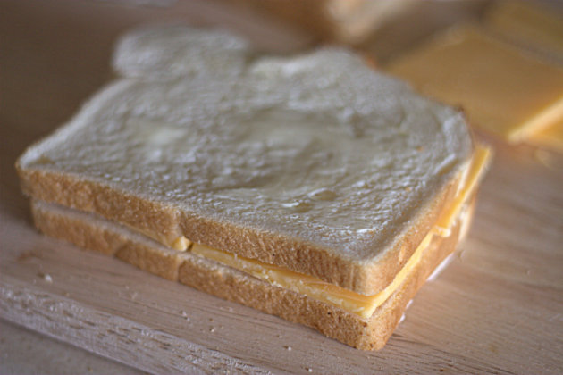
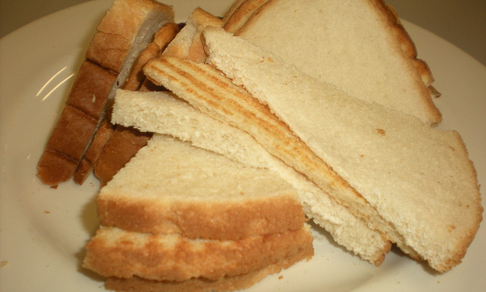

Sandwich Only- Recipes: Other
Recipe #1: Cheese Sandwich
 Things you will need...
| Item |
Amount |
| Bread |
2 slices |
| Ham |
1 slice |
- Place the two slices of bread on a plate
- Unpack the slice of cheese and place it on a slice of bread
- Place the remaining slice of bread on top
Recipe #2: Toast Sandwich
 Things you will need...
| Item |
Amount |
| Bread |
3 slices |
| Toaster |
1 |
- Place the two slices of bread on a plate
- Place the last piece of bread in the toaster
- When done, take it and put in onto one of the slices of bread
- Place the remaining slice of bread on top
Recipe #3: Basic Sandwich
Viewer discretion is advised, this sandwich is not for the faint of heart.
| Item |
Amount |
| Sub Bread |
1 foot |
| Mystery Meat |
3 clumps |
| Mozerella Cheese |
4 blocks |
| Tomatoes |
4 slices |
| Cucumber |
1 (4 slices) |
| Lettuce |
2 handfuls |
| Red Onions |
2 handfuls |
| Olives |
2 handfuls |
| Pickles |
4 |
| Country Ladle |
1 can |
| Whole Fish |
2 |
| Cookie |
3.5 |
| Milk |
2 cups |
| Table Salt |
2 tablespoons |
| Lettuce |
2 handfuls |
| Eggs |
5 |
| Apple |
1 |
- Cut the bread in half.
- Place the mystery meat onto the bread
- Place the cheese onto the bread
- Microwave the sandwich for 1 minute
- Place the four tomatoes onto the sandwich
- Place four cucumber slices onto the sandwich
- Place two handfuls of lettuce onto the sandwich
- Place two handfuls of red onion onto the sandwich
- Place two handfuls of olives onto the sandwich
- Place four pickles onto the sandwich
- Open a can of Country Ladle and pour it onto the sandwich. Make sure to rub it in.
- Slap two fish onto the sandwich
- Place three cookies onto the sandwich. Pause for the fourth, eat half of it, and put it on>
- Pour two cups of milk onto the sandwich
- Pat the sandwich down a little
- Pour salt onto the sandwich
- Place three uncracked eggs onto the sandwich
- Rub the sandwich so everything sets in.
- Break all of the eggs
- Remove the fish and flatten the sandwich
- Salvage what little of the bread is left and place it down
- Gather the sandwich contents and place it back into the bread
- Pick up the sandwich and place it on a plate
- Give it a few more slaps to flatten it
- pick up whats left of the sandwich and place it into a napkin
- Take an egg and break it over an apple
- Eat the rest of that cucumber instead, that sandwich is actually disgusting.